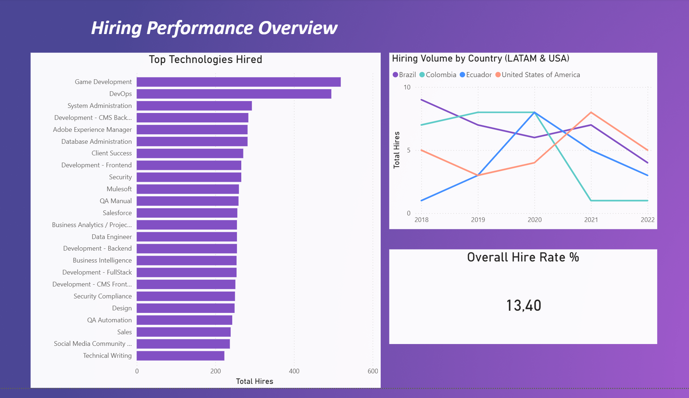
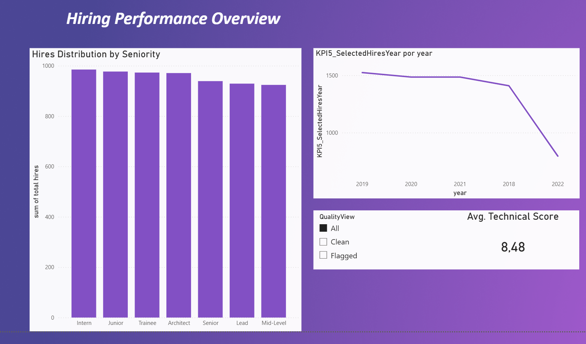
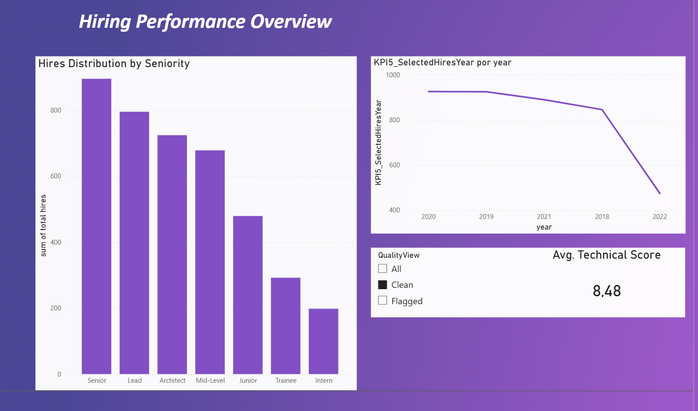
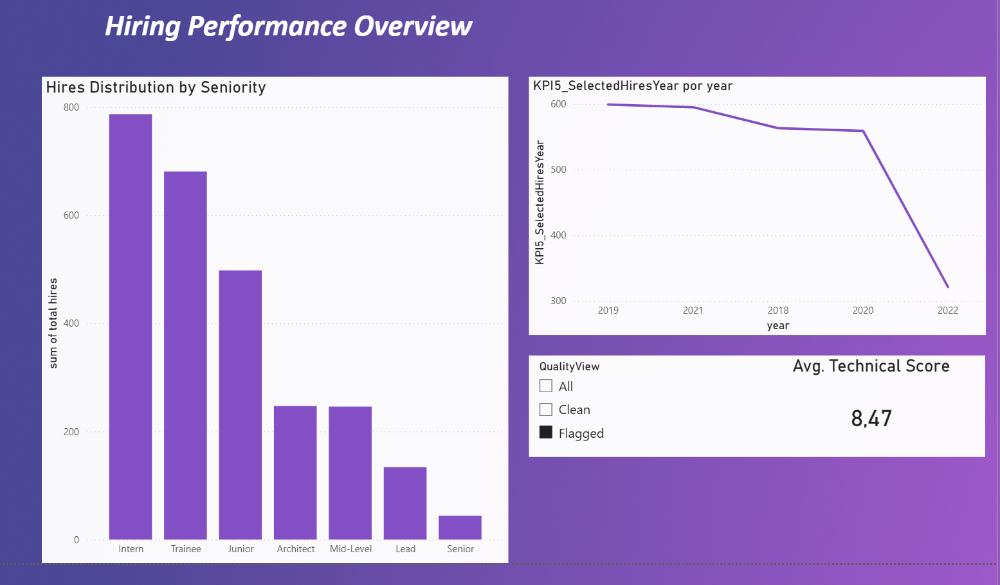

Hiring analytics · raw applications in, a decision-ready warehouse out.
Analítica de contratación
Un archivo de postulaciones entra al pipeline. La salida es una bodega con esquema estrella y un tablero para ver contrataciones por tecnología, país, año y seniority. Las filas que no cuadran se marcan. No se borran.
Cómo se decide una contratación
La regla vive en la transformación, no en el tablero: hay contratación cuando el reto de código y la entrevista técnica quedan en 7 o más. El tablero solo lee la bodega.
Tres lecturas del mismo dato
- All. Historial completo, incluidas las filas marcadas.
- Clean. Solo filas que pasaron las reglas de calidad.
- Flagged. Lo sospechoso: seniority imposible, puntajes fuera de rango, y el resto de reglas.
Eso permite auditar sin perder volumen. Un intern con más de cinco años de experiencia no desaparece del archivo: queda visible en Flagged.




Figures are the Power BI delivery. The public page does not re-query a live database. Source file stays out of the repository.